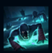
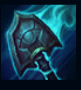
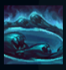
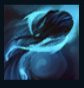
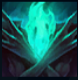

Yorick
| Yorick The Shepherd of Souls | |
|---|---|
| Release date | 22.06.2011 |
| Class | Juggernaut |
| Positions | Top |
| Resource | Mana |
| Range type | Melee |
| Adaptive type | Physical |
| Base statistics | |||
| Health | 580 – 2280 | Mana | 300 – 1320 |
| Health regen. | 8 – 21.6 |
Mana regen. | 7.5 – 20.25 |
| Armor | 39 – 107 | Attack damage | 62 – 147 |
| Magic resist. | 32 – 53.25 | Crit. damage | 175% |
| Move. speed | 340 | Attack range | 175 |
Yorick este ultimul membru rămas dintr-un ordin religios demult apus – un călugăr binecuvântat, dar și blestemat, cu darul de a controla morții. Neputând scăpa de pe Insulele Umbrelor, se folosește de stârvurile în descompunere și de spectrele aflate în agonie din acest tărâm pentru a-și crea o armată. Acțiunile sale monstruoase au, totuși, un scop nobil: Yorick dorește să salveze Insulele de blestemul Cataclismului. |  |
MONAHUL UMBRELOR ''Oastea blestemată'': Yorick poate invoca moroi care să atace inamicii din apropiere. |
||
|---|---|---|---|---|
 |
SLUJBA DE APOI La următorul atac de bază, Yorick va provoca daune bonus și se va vindeca. Dacă ținta moare, în locul ei apare un mormânt. |
|||
 |
CORTEGIUL ÎNTUNECAT Yorick invocă în zona-țintă un zid destructibil care blochează mișcarea inamicilor. |
|||
|  |
BLESTEMUL NEGURII Yorick aruncă negură întunecată spre inamici, provocându-le daune, încetinindu-i și aplicându-le un însemn. |
|||
 |
ELEGIA INSULELOR Yorick o invocă pe Fecioara din negură. Atacurile lui Yorick împotriva țintei Fecioarei provoacă daune suplimentare. În plus, Fecioara invocă în mod automat moroi din inamicii uciși. |